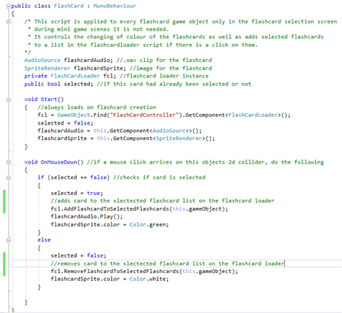
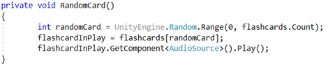

The ESL flashcard system will start with these features, with the possibility to expand and add more features later as needed:
Planned Program Flow Diagram:
The main menu will consist of three buttons:
Clicking either of the game buttons will proceed to load up the selected mini-game, whereas the exit button will exit the application. The application will have an appropriate background image and a simple music loop.
The team will make a basic set of twenty flashcards to the following specifications:
All flashcards will also have an accompanying audio file that reads the word on the flashcard in a .wav format.
All flashcard image files, and audio files will be placed in a single folder in the applications root directory in an images folder, underneath a flashcards folder: (flashcards/images). Each flashcard image will be named based on the card in the .PNG image format, say for example ‘pineapple.png’. A corresponding audio file in the .WAV format will also be placed in an audio folder in that same flashcards directory (flashcards/audio) and will be named to match the image name (I.e. pineapple.wav).
The application will then dynamically load the image and audio files to create the flashcards in the applications flashcard selection page. The user will then have to select six flashcards. As the user clicks flashcards, they will turn green. Once the user has chosen six flashcards, they will continue to the mini game they had previously selected.
A row of six flashcards will be displayed face up. The application pronounces one of the cards. The user then has 10 seconds to click on the matching flashcard. The user gets one point for a correct answer, or one point deducted for a wrong answer. The round will end when the application has finished reading all the flashcards. The game will not repeat the same flashcard twice.
A grid of flashcards is displayed, which is each of the six flashcards loaded twice, then distributed randomly on the screen. The flashcards are face down. The user will then click flashcards in pairs, looking for matches. As the card turns over, the audio plays. The user gets a point every time they correctly reveal a matching pair. The game has a timer that gives the user a time to beat for the round. The round ends when the user has matched all the pairs, or the timer runs out. A final score is given based on the time remaining as well as how many pairs the user successfully matched.
The plan for mini game ‘Word Match’
Similar to game 1, a grid of 10 images is displayed though this time just the image of the object is shown not the name of the object. The application will display the English name of one of the objects at the bottom of the screen below the cards, the user then has 10 seconds to match the word to the image by clicking on the correct image. After correctly selecting all the correct images the game will end or after 60 seconds has elapsed. Additional functionality could include displaying the name of the object in the user’s 1st language.
We will create a basic video advertisement for our flashcard system. The video will showcase all the features of our program as well as show a small sample video of a non-native child using this application.
We will create a simple website to show the product's features as well as allow the user to download the application onto their system. This website will show system requirements as well as documentation on how to use our software.
The project itself is created using the name ‘FlashCardSystem’. The settings were changed to 2D, rather than 3D as the program does not utilise the 3D engine of Unity.
The project itself will consist of several unity scenes, which are containers which hold the game objects alongside scripts. As of this version (v0.03), there are three scenes currently setup:
The main menu consists of a background image, an exit button, and a list of buttons for each mini game.
As of version v0.03, this is the current display that the user will see when they load the application:
This is the main camera that focuses the screen, the settings were configured to use an orthographic 2D camera set to five units away to fit the main menu on the screen.
This was created by using a unity ‘canvas UI’ object, and some smaller panels inside it. One panel is the overall large panel that displays the background image, the next panel is a smaller one to hold in the title text as well as the buttons. The reason UI is used is to ensure that no matter the screen resolution all objects will fit on the screen. Inside the Canvas UI is Panel #1. This panel keeps all the UI objects stretched onto the screen as well as holds a background image, sourced from the royalty free site (http://clipart-library.com). Inside Panel#1, is Panel#2. This panel holds the Title Text object which displays the title of our application.
Inside Panel#2, is Panel#3, which holds all mini-game buttons. These buttons are used to launch the minigame. They run a unity UI button touch function to launch a function on the ‘Menu Script’ C# script, depending on the button pressed. As of this version (v0.03), only one mini game is working so only the ‘Mini Game #1’ button is active. The exit button is simply there to load the ‘Exit Application’ function and quit the application.
This is a default unity object that is created to register clicks on the ‘Canvas UI’ objects and buttons, it is created by default and can be ignored for now.
This is a unity object that is created to hold the Menu Script. The menu script controls button presses and sets up the system based on these presses to register the correct button pressed, saved the game selected in the global variables controller and then load the flash card selection scene.
The flashcard selection scene is loaded after a user clicks one of the main menu buttons. This scene has three general tasks:
As of version v0.03, this is the current display that the user will see when they load the flashcard selection area of the application:
This is the main camera that focuses the screen, the settings were configured to use an orthographic 2D camera set to twenty units away to fit the main menu on the screen. This is a difference in distance as opposed to the main menu
This was created by using a unity ‘canvas UI’ object, in the flashcard selection scene it is simply used to display the three different text objects, ‘Selected Text’ which tells the user how many flashcards they have already selected, ‘Title Text’ which tells the user to select ten flashcards and ‘Page Number’ which shows the current page of the flashcards you are viewing.
This is a default unity object that is created to register clicks on the ‘Canvas UI’ objects and buttons, it is created by default and can be ignored for now.
This is a unity object that is created to hold the Flashcard Loader Script. The flashcard loader script is responsible for reading all files in the applications root directory, flashcards folder and creating the unity game objects for these flashcards.
Here the application displays all the created cards in two rows, with five cards per row. If there are more than this, they will not be loaded unless the user changes the page.
Here the application awaits either ‘Left Arrow’ or ‘Right Arrow’ buttons to be pressed, it then changes the page of the flashcards the user is viewing. If the user is already at page 1, it will not allow the user to continue going back, as well as if the user is at the end of the flashcards, the user will not be allowed to continue forward.
This Update Elements GUI function is run every every time a button is pressed to update the graphics user interface (GUI) of the user. It changes arrows to red if they are unavailable to be pressed, as well as the continue button to red if the user has not selected enough flashcards to proceed. It also increments the selected flashcards text so the user can see how many flashcards they have already selected.
These functions come in from the flashcard scripts on the flashcard objects and add/remove them from the selected flashcards list. The selected flashcards list is used to be passed into the next scene, the selected game from the main menu, so that the users correct flashcards are used when they play their selected mini game.
This Continue to Game function is used when the user clicks the ‘continue’ button the GUI. It first checks if the user has selected 10 flashcards, then proceeds to save the name of all the selected flashcards and saves them in the global variables controller to be carried onto the next scene. If the user has not selected 10 flashcards, the user will hear a buzz and not be able to continue.
The flashcard game object has both an image an audio attached to it. It is created by the flash card loader script. This is the game object that physically shows up as card in the game itself.
Here is an example of two of these objects appearing in the flashcard selection screen.
Attached to these flashcard objects is ‘flashcard’ script. This handles users' interactions with the flashcard's game objects.

The flashcard script simply listens for a click on the flashcard game object, then sends passes itself to the flashcard loader script when pressed. If it has already been pressed, it sends the request to deselect it.
This game is created with the following configuration, first the user hears audio from one of the cards at random, then they must click on the cards. If they click the incorrect card, it turns red and one point is deducted. If they hit the correct card, a point is added, and a new cards audio is played. The user has 60 seconds to get as many points as possible. When the time runs out, the user can no longer click on anymore cards.
Here is an example of the Game # 1 scene as of v0.03.
Here is the diagram for game #1.
This is the main camera that focuses the screen, the settings were configured to use an orthographic 2D camera set to twenty units away to fit the game #1 scene
Three text components are here, used to display the score, the time remaining and show the title text.
This is a default unity object that is created to register clicks on the ‘Canvas UI’ objects and buttons, it is created by default and can be ignored for now.
This is a unity object that is created to hold the Menu Script. The menu script controls button presses and sets up the system based on these presses to register the correct button pressed, saved the game selected in the global variables controller and then load the flash card selection scene.
This Create Cards method runs through and loads cards and image files from the folder based on what was passed through during the flashcard selection screen.
This Display Cards method sets the cards in a 2x5 grid on the game playing area, and adds it dynamically to allow a change in the amount of cards later on if the project design changes.

This method is run every time a flashcard is correctly selected to choose a new random card for the user to find.
This method is run when the mouse is clicked on a card to either give a ding and add a point if the card clicked is correct, or a buzz if the card clicked is incorrect. If the card is incorrect, the card will change colour to red to allow the user to know that the card selected was not the correct card.
This updates the user's graphics user interface to show seconds remaining as well as update the users score.
This is the timer that counts down the seconds, if time runs out the game will progress to game over.
This method is run to ensure the game stops and the users score is finalised at the end of the round.
--Creation of Unity Project.
--Creation of Main Menu Scene.
--Creation of Buttons for Main Menu.
--Creation of Main Menu UI.
--Creation of Main Menu Controller.
--Basic Main Menu Scene completed. Will need to revise and update in a later version.
V0.02
--Creation of flashcard selection scene.
--Creation of flashcards selection buttons.
--Creation of flashcard loader script.
--Creation of the flashcard script.
--Flashcard Selection scene complete.
V0.03
--Creation of Game #1 Scene.
--Creation of GameController.
--Creation of Game1Script.
--Game #1 Scene complete.
The flashcard software must be able to load flashcards dynamically by the user AFTER the project is built from the source files, however right now flashcards can only be added before the project is built. This is a bug and problem in code design which needs to be resolved, we are looking into how to do this now.
The project still needs the addition of more mini games, starting firstly with the planned-out memory game that will need to be created. This can be created following the similar pattern of how game # 1 was created.
A planned 3rd mini-game is to be created, in addition to the ‘memory’ game. This can also be created following the similar pattern of how game # 1 was created.
Another planned feature is the idea of sharing flashcard packs. An upload and download function would need to be created on a cloud repository with unity3D functions set to be able to load these at will.
In designing the flash cards, I interviewed a New South Wales primary school teacher to determine appropriate content, so that they would be beneficial for preschool and kindergarten classes learning English as second language.
Subsequently I decided to use common nouns in 5 different categories. These could be used as sight words for reading, or for classification activities. In order to determine the correct format, I researched fonts used in schools and those that have optimum readability. For this reason, I chose the font Berlin Sans Fb.
For the voiceovers I commissioned a professional voice actor to record the words ensuring the clearest articulation and audibility. Clear articulation for young listeners is essential, especially for the high frequency sounds. The flashcard artwork is royalty free and chosen for its simplistic style and cartoonlike appearance which would appeal to young children. Each flashcard is 750x 1000 pixels to ensure a correct fit within the app. The website link is: https://pixabay.com
Tester 1
Application opened ok, did notice the menu didn’t resize properly and so was marked as a bug. Seemed a bit slow to exit once hitting the exit button.
Tester 1
Flashcard selection worked fine but the game 2 button was not working, but it is in development. Sometimes flashcards doubled up. Also, cannot add your own cards in the folder, the flashcard software doesn’t load the new cards?
Everything worked as normal, the flashcard doubling up still sometimes occurred as well as the game 2 button was still not accessible, but that feature is not developed yet. No major bugs were found, and the game seemed to run smoothly enough and loading the flashcards from the flashcard folder still doesn’t work. One issue was a slight delay with the ‘buzz’ sound sometimes coming up at weird intervals unrelated to the game playing itself.
As the game is a basic children's game, the background type for the game's tester could be anyone who is able to notice any basic errors as the prototype of the game. As we have IT skills across a broad range in the group any member can test and also mention enhancements to the game. It is possible that a few versions of the game could be made after some prototype changes.
The games files themselves are sitting in their own unique game folders with pictures and sounds, so it makes it simple that a user doesn’t click on the wrong file to open and start the game. Generally, you could create a desktop icon. The main screen itself has no main bugs at this stage of the development of the game, the only issue that might be considered from some criteria is the amount of green space between the tomato pictures and the games buttons.
The second mini games button doesn’t work at this stage but the second game is still under construction so this will be corrected in the next games update of the prototype. The first option to load up the game works as intended. After the game is loaded each sound for each animal work as intended and no further corrections will be needed for this, the time on the game works as it should as well. The only main bug I could find through playing at this stage was that the animal cards you would have to select would often double up, this could be a creation of the game but it was happening a bit so could be considered a potential bug.
So far, the majority of the prototype works as it has been designed.
Tester 3
Main Menu functions correctly, although menu option size could be increase as on a smaller screen it may be difficult to read. Mini-Game #2 is not yet functional, so the button for it does nothing as of yet. In Game #1 the “Chair” card does not have an associated audio file attached to it so it does not play, seeing as the game uses audio cues to play this makes the chair card unusable in it’s current state. Page 3 on the card selection screen currently empty, this should be removed if it is to stay empty, or additional cards should be added to fill this screen. The game also repeats the flashcards rather than ending once all have been correctly selected.
The project has been coming along smoothly, some changes in design have been noted such as the idea to implement cloud flashcard decks into the program. We have not designed any flashcard categories or sorting systems yet but have also decided to add this into the program. Some problems we have encountered is the large file size and difficulty sharing work amongst the group, we have opted for Unity3D collaboration to try and help collaborate changes better.
We are now at the point where the basic weekly timeline has been met and are looking forward to continuing this project even after the module is over.
We still have a problem with dynamically loading flashcards, right now they are loaded from the ‘resources’ folder in unity3d however new flashcards cannot be added after the project is built. We have tried a few different methods but are still working on a way to resolve this issue as the program does need to be able to dynamically load flashcards.
If another team was to take over at this point, they would have a couple of main points to follow up:
For our group we have decided not to go with individual roles, but with section the work into categories of work that need to be done. We have identified six categories that will need to be completed. The reason we have chosen this approach as opposed to singular roles is so that people may take up multiple tasks and roles if they wish to do so. Here are the categories we have chosen to go with, all work in our timeframe as well as project progress will also be separated into these roles if they are applicable.
This will consist of all organisation on our platforms, including Trello/slack/discord/GitHub, meetings, the document report as well as all other admin related tasks. Another task falling under this category is the compiling and quality control of our reports and documents. This will also include the work on the rest of the document less related to our project, for example the team profile section on our main document.
This will consist of all work related to programming and development and will mainly focus on the use of Unity3D to create the actual application as well as creating logs. Programming will also be responsible for documenting, screenshotting and explaining our development process so it is easy for another team to pick up our project.
This will be all asset acquisition and creation. This involves creating the flashcards, recording audio, finding background images and any other graphics/audio we might need for our project. This will also encompass the creating of a progress report for this process and have we have managed so far.
Testing will be all testing and QA on our application project, as well as the creation of reports showing testing and QA information.
This will be work related to the updating of our GitHub page to reflect all the new content generated by Assignment 3.
All work related to the creation and storyboarding of our presentation video for our application.
The general scope of this project does seem to be possible to do in the allotted time, as the project itself is reasonable for six people to create. We have, however, placed some limits on creating this application to deal with scope creep and help us meet and manage our time and work commitments on this project.
One of these limits has been the number of mini games we will produce, as it stands now, we only plan to add two. Ideally, if time and scope constraints weren’t an issue, we would want to add many more mini games to the application.
Another limit on our project is the number of flashcards we will create and supply with the application. A set of twenty is a rather modest number. Ideally, we would have many more. An ESL flashcard application such as this should have at least 200 or so cards in a stock version. We plan an enhancement where the users may create their own flashcards, but we would prefer more flashcards bundled with the stock application.